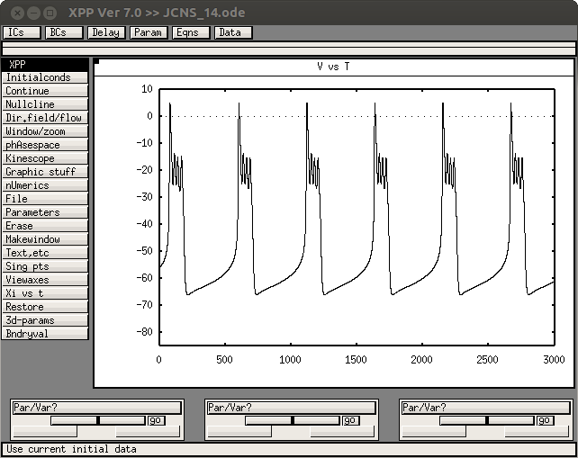

The XPP code associated with the paper: Vo, Tabak, Bertram, Wechselberger "A Geometric Understanding of How Fast Activating Potassium Channels Promote Bursting in Pituitary Cells", J. Comput. Neurosci., 36:259-278, 2014 is available at this website: http://www.math.fsu.edu/~bertram/software/bursting/ and specifically this link: http://www.math.fsu.edu/~bertram/software/bursting/JCNS_14.ode These web pages were accessed last June 10th, 2014. Note from the ModelDB administrator: to run with XPP version 7.0 I found I needed to change bell=off to bell=0 on one of the last few lines. The model when run in its default setting: (On my linux system) $ xppaut JCNS_14.ode and then clicking on Initialconds -> (G)o produced a graph similar to Fig. 2C:  The parameters for the many other paper figures are given in the captions.